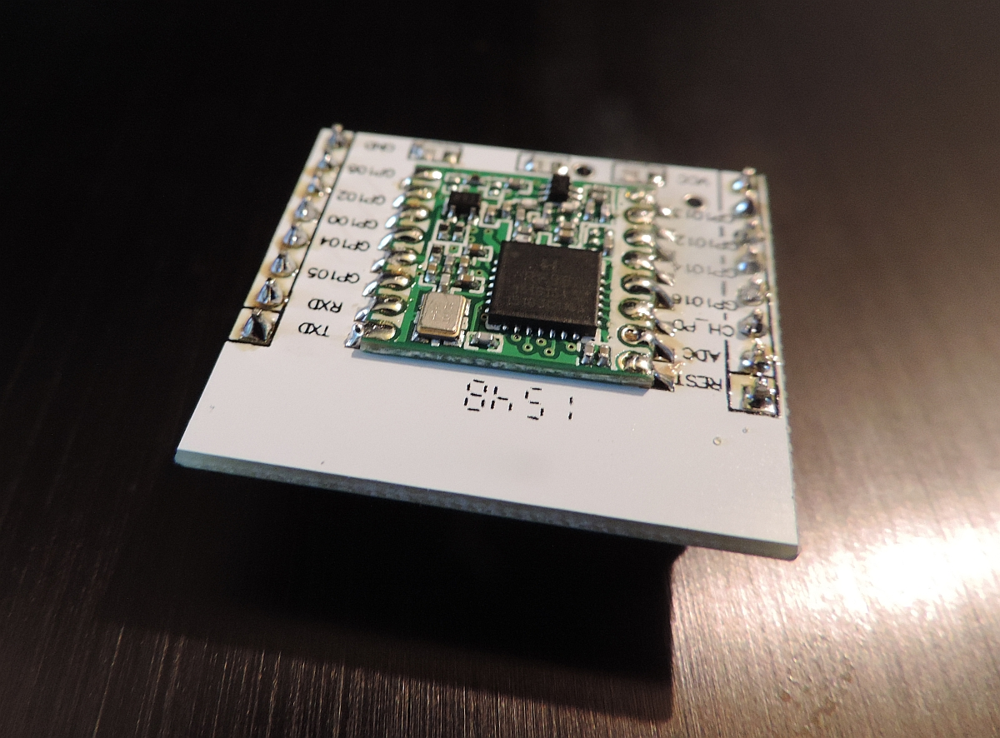
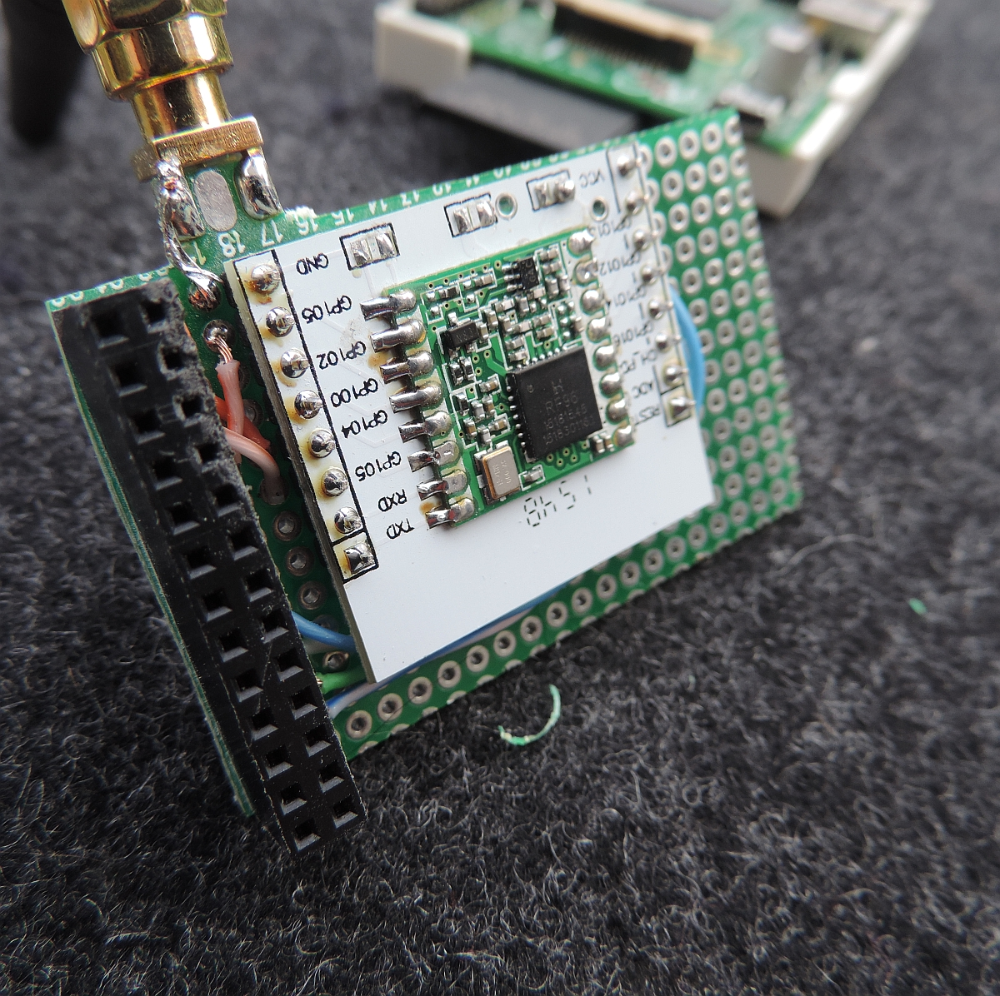
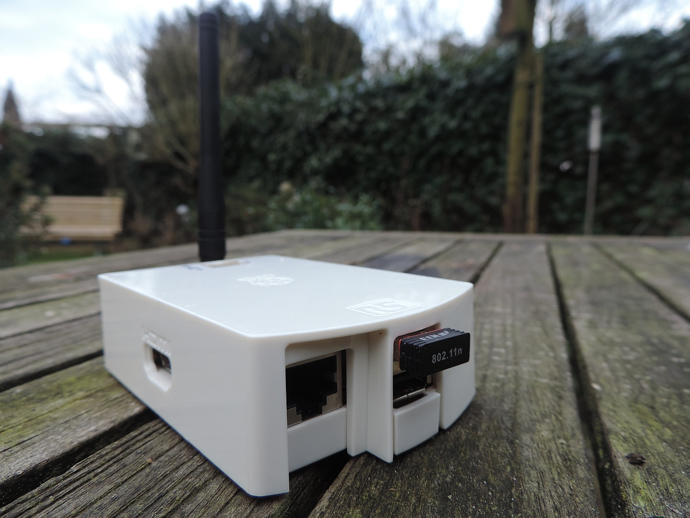
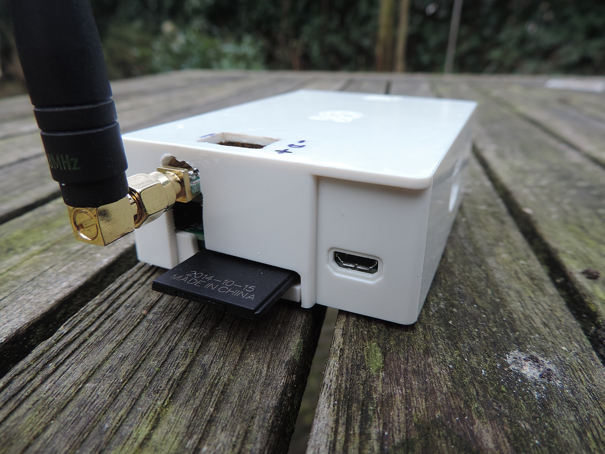

Version: 1.0 draft
date:
March 25, 2016
(c) Maarten Westenberg (mw12554@hotmail.com)
A regular gateway for thethingsnetwork or LoRaWAN is capable of managing 10 frequency channels and 20,000 devices (according to specs). For that, a special chip is needed, the SX1301 of Semtech which is both powerful and expensive and determines for a large deal the performance and price of LoRA backend devices.
In December 2015 Thomas Telkamp published a single channel gateway on forum.thethingsnetwork.org It was published as a proof of concept: Is it possible to make a single channel gateway on cheap hardware, making use of only a LoRa transceiver board (like the RFM95) and a cheap Linux computer. So I decided to make one myself as it allows easy testing of the gateway in a particular location. Since I do have a few Arduino type B (old model) boards and am slowly updating them to model 2 (and 3) I did have an Arduino with matching case available for this project.
Remember: This is a proof of concept project and by no means an official LoRa Gateway, the project is described and presented AS-IS! And although it works fine now, neither me (nor Thomas I am sure) will guarantee that the hardware or software is fit for a particular purpose, no warrantee is offered and we do not provide any future upgrade or patches.
First of all, we have to mount the RFM95 on an adapter board. There are no dedicated adapter boards available for this transceiver but the board for ESP8266 is quite good usable. Do not forget to remove the three small resistors (in the picture on the other side of the board). This small (white) board is sold for about $2.50 per lot of 10 boards.
As an alternative, OshPark makes/sells a really nice adapter board for the RFM95 at a very competitive price. It would mean even less soldering to get that one working on your RaspberryPI.

Then make a board for the RaspberryPI. I decided to mount the RFM adapter board upside down, this makes the wiring a LOT easier as all soldering points are on the same side of the board.

Fortunately I did have a case available as well. It was used for another project first so there is a hole on top, but otherwise it is a nice fit.

You have to cut away some plastic of the case in order to make the antenna and SMA interface fit.

The following connections must be made for the Gateway between RFM95 and the RaspberryPI. As we will mount the RFM95 upside down on the connection board that attaches to the P1 connector of the RaspberryPI, it will make our life simple if all connections are made on the odd pin numbers of the P1 connector. So we choose pin 9 for the GND connection instead of the default pin 6.
| RFM95 | -- | Raspi | |
|---|---|---|---|
| VCC | 1 VCC | ||
| GND | 9 GND | 6 GND | |
| DIO0 | 7 GPIO7 | ||
| RST | 11 GPIO0 | ||
| MOSI | 19 MOSI | ||
| MISO | 21 MISO | ||
| NSS | 15 GPIO3 * | 22 GPIO6 | |
| SCK | 23 CLK | ||
The RFM95 pin-out is included as reference below.
So what does it cost to build this LoRa gateway
| Number | Item | Price/Piece |
|---|---|---|
| 1 | RaspberryPI model B | 25.00 (older) |
| 1 | RaspberryPI model B case | 5.00 (older) |
| 1 | Wifi mini USB dongle | 5.00 (older) |
| 1 | Power Adapter with mini usb | 5.00 (older) |
| 1 | 2GB Memory Card | 4.00 (older) |
| 1 | RFM95 transceiver board | 8.00 |
| 1 | ESP8266 adapter board to get RFM95 to 2.54 mm pin spacing (sold per 10) | 0.23 |
| 1 | Piece of perf board | 1.00 |
| 1 | RaspberryPI connector (26-pin) | 0.50 |
| 1 | Antenna for 868MHz (sold per 10 for 17.60$) | 1.76 |
| 1 | SMA board connector | 0.25 |
| UTP wire for hookup | ||
| Total (but if you have old stuff laying around it will as low as 15 Euros) | 55.00 | |
In order to get the singe channel gateway to work you have to load the software onto a RaspberryPI. Any Raspberry will do, and since the Gateway has not so many things to do, the old Raspi's might be the better choice as their power consumption is (much) lower.
There are MANY how-to install your RaspberryPI pages on the internet, so I will keep mine to an absolute minimum. Please refer to one of these many places if you need more information or help. The simplified process is as follows:
The following links contain useful information for this project.
I think we all ask the same questions:
There are some things to remember however: